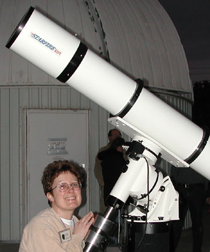

|  |
In keeping with SJAA Ephemeris tradition of being prepared regardless of the physical location of the editors, the April edition is seen being prepared in Fort Davis, TX, 16 miles from McDonald Observatory. At left is the occasion for the road trip, a new telescope, getting first light at a Spring Break Star Party hosted by McDonald Observatory.
|